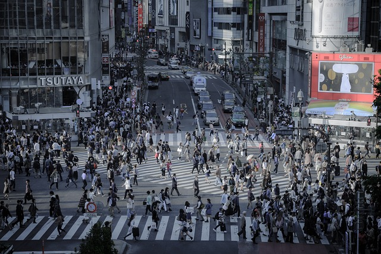
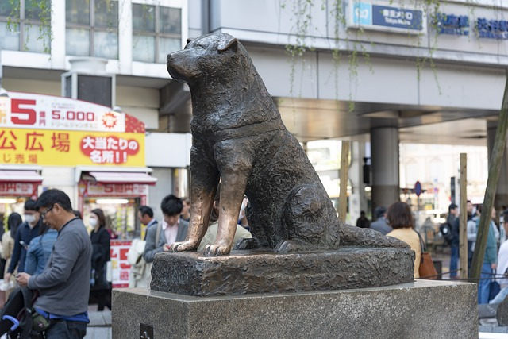

Ciertamente todas las personas tienen gustos distintos, por esto mismo yo puedo decir algo que posiblemente no sea de tu agrado. Pensando en esto mi opción para hacer turismo, seria Japon, en especifico la ciudad de Tokio y sus barios emblematicos: Shibuya y Akihabara.
El paraiso para los amantes del manga y anime
Uno de los barrios de moda y entretenimiento más populares de Tokio. Y es uno de esos lugares icónicos entre los que visitan Japón, sobre todo por su inmenso paso de peatones, que cruzan a diario miles de personas.
Shibuya también tiene muchos rincones por descubrir. Y es que es muy interesante no quedarse únicamente con el Shibuya más
reconocible para los turistas, porque nos perderemos lugares con mucho encanto.
Eso sí, es importante recalcar que Shibuya está en constante cambio y la zona de la estación de Shibuya más todavía. De hecho,
el complejo alrededor de la estación lleva en obras varios años y hasta 2027 no se espera que esté totalmente finalizado. Es
por ello que la visita a la zona irá cambiando a medida que vayan completándose algunas de las obras más importantes.
Cruzar el cruce de Shibuya, uno de los cruces de peatones más famosos de todo el mundo, ¡es toda una experiencia! Lo interesante es que podemos cruzarlo en cualquier dirección y así ir de cualquier punto a cualquier otro.
Hacerse una foto con la estatua de Hachiko, probablemente el perro más famoso de Japón, es una de las estampas más icónicas de haber visitado Shibuya.
A pesar de que su amo falleció, este perrito siguió esperándole durante años frente a la estación de Shibuya. Demostró tal fidelidad que se irguió esta estatua en su memoria y hoy Hachiko, o el perro fiel Hachiko, como se le conoce en japonés (Chūken Hachikō, 忠犬ハチ公), es uno de los puntos de encuentro más famosos de la capital japonesa.
De lo que casi no se habla, es visitar la tumba de Hachiko, ya que se que ir hasta el cementerio de Aoyama, también en Tokio, donde reposa el fiel perro junto a la tumba de su dueño.
Afortunadamente para esto tenemos varias opciones, pero acontinuacion nombraremos 3 de las opciones mejor calificadas en una pagina de viajes (expedia.com.mx)
1.- Hotel Indigo Tokyo Shibuya, an IHG Hotel. Hotel de primer nivel, a unos pocos pasos de Cruce de Shibuya
2.- Shibuya Excel Hotel Tokyu. Hotel de primer nivel, a unos pocos pasos de Cruce de Shibuya
3.- Cerulean Tower Tokyu Hotel. Hotel con spa de lujo, a unos pocos pasos de Cruce de Shibuya